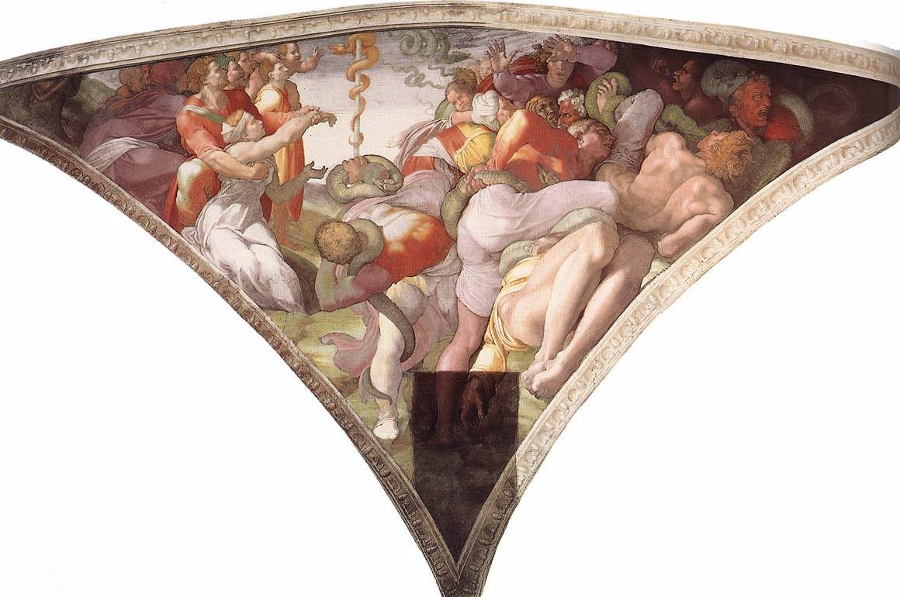

Juan 3 — La Traducción Mister

Esta es la escena a la que remite el versículo 14 —Números 21, la serpiente de bronce que Moisés levantó en el desierto—, pintada en una de las cuatro pechinas de esquina de la bóveda Sixtina, las cuatro escenas de liberación (las otras son Judit, David y Goliat, y el castigo de Amán). ⚠ Pero obsérvese el reparto del espacio. El remedio es pequeño, pálido y fácil de pasar por alto —una serpiente delgada en un palo delgado—, mientras que la plaga ocupa dos tercios del cuadro en una maraña de cuerpos retorcidos y serpientes verdes enormes. Miguel Ángel le da al rescate una fracción del campo y al sufrimiento casi todo. ⚠ Y nótese qué están haciendo los salvados: a la izquierda están de pie, con los brazos en alto, mirando. Ese es todo el mecanismo en Números —el mordido miraba y vivía— y por eso es la imagen que Juan 3 necesita, porque el versículo al que va unida compara ese mirar con el creer. La serpiente enroscada en un asta vertical forma además la figura que la tipología requiere, cosa que nadie en 1511 habría tenido por casual. ⚠ Es la segunda imagen de esta misma bóveda en estas páginas: la otra es el Jeremías del capítulo 18 de Jeremías.
.png){kind=link}
Notas del traductor — versículo por versículo
Cada nota explica la decisión de esta traducción y la compara con el estante en español: la TNM (Traducción del Nuevo Mundo), la Reina-Valera en su recorrido de registro (RV 1909 arcaica ↔ RV60 moderna) y la NVI. Las citas de versiones con derechos reservados se limitan a frases cortas.
Nicodemo es un fariseo con nombre griego. Nikodēmos es nikē (victoria) + dēmos (pueblo): un nombre griego corriente llevado por un judío principal, lo cual ya dice algo sobre lo mezclado que era aquel mundo. Es un archōn, un principal, que en este Evangelio significa casi con seguridad un miembro del consejo. Reaparece dos veces y las dos igual: en 7:50 exigiendo que la ley conceda audiencia a un hombre, y en 19:39 llegando con cien libras de especias para un entierro (ninguno de los dos todavía en estas páginas).
⚠ «De noche» no es ambientación. Juan nombra la hora en el versículo 2 y, dieciocho versículos después, dice lo que la noche significa en este libro: «los hombres amaron más las tinieblas que la luz» (v19). El capítulo se tiende su propia trampa y la cierra. Si Nicodemo viene de noche por prudencia, por discreción o simplemente porque ahí sigue, Juan no lo dice: solo se asegura de que el lector reparó en la hora.
⚠ Anōthen significa «de arriba» y significa «otra vez», y el diálogo solo funciona porque significa las dos cosas. Jesús dice que hay que nacer anōthen; Nicodemo oye el sentido temporal y hace la famosa pregunta absurda sobre volver al vientre. Si la palabra solo quisiera decir «de arriba», su respuesta sería ininteligible; si solo quisiera decir «otra vez», no seguiría el resto del capítulo. Ninguna lengua moderna tiene una palabra que haga los dos trabajos.
Contado en el archivo y no de memoria: la palabra aparece 13 veces en el Nuevo Testamento, y cinco son de Juan (3:3, 3:7, 3:31, 19:11, 19:23). Esa distribución decide bastante: todos los demás usos jonaicos son espaciales —la autoridad «dada de arriba» (19:11), la túnica tejida «desde arriba» (19:23)— y Juan no lo usa nunca en sentido temporal. En cambio el sentido temporal existe sin duda en otros libros: Gálatas 4:9 tiene a unos hombres queriendo esclavizarse anōthen, de nuevo. Así que el malentendido de Nicodemo es una posibilidad real del griego y no un espantajo.
⚠ Y Juan resuelve él mismo, en este mismo capítulo, qué sentido usa. En el versículo 31 la palabra vuelve: «el que viene anōthen está por encima de todos… el que viene del cielo está por encima de todos». La segunda línea glosa la primera. Por eso esta traducción usa una sola expresión en los tres lugares, por la misma regla que mantuvo idéntico glōssa en Hechos 2: cambiar de palabra para alisar cada verso esconde la bisagra sobre la que gira el pasaje.
⚠ Los dos testigos españoles parten la palabra, en el mismo capítulo. RV 1909 tiene «naciere otra vez» en v3 pero «El que de arriba viene» en v31; la TNM tiene «nace de nuevo» y luego «El que viene de arriba». Ninguna de las dos es descuidada: hacen lo que hacen todas las versiones, elegir verso por verso. Imprimir la partición es la demostración más clara de que ninguna versión puede sostener la palabra entera.
⚠ Y en el versículo 8 vuelve a ocurrir, con otra palabra. To pneuma hopou thelei pnei —y el verbo es de la misma raíz que el sustantivo—. Pneuma es viento y espíritu: la primera mitad del verso es meteorología (sopla, oyes su sonido, no lo puedes rastrear) y la segunda es el Espíritu (naces de él). Una palabra, dos cosas, en una frase construida sobre ese hecho. Esta traducción tampoco puede conservarlo —«viento» y luego «Espíritu»— y lo dice en lugar de dejar pasar la costura. El hebreo ruaj carga exactamente lo mismo.
El versículo 11 cambia de número por los dos lados a la vez. «Hablamos lo que sabemos… y vosotros no recibís nuestro testimonio»: los pronombres son plurales donde toda la escena ha sido un hombre hablando con otro. Algo se ha ensanchado. La biblioteca informa del cambio en lugar de alisarlo al singular.
⚠ Una adición textual en el versículo 13, y la dirección del cambio es el argumento. Después de «el Hijo del Hombre» la tradición bizantina añade ho ōn en tō ouranō, «que está en el cielo», y la RV 1909 lo imprime. Los testigos más antiguos no lo traen. Pregúntese hacia dónde se movería un copista: alguien con una cristología alta tiene un motivo evidente para añadirlo a una frase sobre alguien que bajó del cielo y está de pie en la tierra; nadie tiene motivo para suprimirlo.
Hypsoō es «levantar» y «exaltar». Juan lo usa tres veces de Jesús (3:14, 8:28, 12:32) y en 12:33 se detiene a explicarlo: lo dijo «indicando de qué muerte iba a morir». El doble sentido no es conjetura de comentarista: lo señala el autor. Ser levantado en un madero y ser levantado en gloria son el mismo verbo en este Evangelio.
La comparación es más extraña de lo que suena. Moisés levanta una serpiente de bronce y los que la miran viven (Números 21:8-9, todavía no en estas páginas). Lo que se alza para sanarlos es una figura de aquello mismo que los está matando. El verso compara con eso al Hijo del Hombre y no explica la comparación; esta traducción tampoco.
⚠ Y el versículo 15 ha sido atraído hacia el 16 por los copistas. El texto más antiguo dice solo «para que todo el que crea en él tenga vida eterna». La tradición bizantina inserta «no se pierda, mas», que es la redacción del versículo 16. Dirección del cambio otra vez: el 16 es la frase más conocida de la Biblia, de modo que un copista tiene toda la atracción hacia ella y ninguna en contra. ⚠ La armonización borra además una diferencia real: el v15 tiene en autō y el v16 eis auton, dos preposiciones distintas.
⚠ «De tal manera amó Dios» es cuestión de MODO, no de cantidad. El griego abre houtōs gar ēgapēsen, y houtōs significa así, de esta manera. No es el intensificador que el lector oye en «tanto». La construcción es houtōs… hōste, «de esta manera… de modo que»: así fue como Dios amó al mundo: dio. La lectura familiar convierte una afirmación sobre la forma del amor de Dios en una afirmación sobre su tamaño.
⚠ Y aquí el castellano tiene una ventaja que el inglés perdió. La RV 1909 lee «Porque de tal manera amó Dios al mundo» —exactamente el sentido de houtōs—, mientras que la moderna TNM pone «Dios amó tanto al mundo». Es la segunda vez en estas páginas que la RV antigua le gana a la TNM en exactitud, después de lunático en Mateo 17:15: la regla es seguir a quien esté más ceñido, no a quien suela estarlo.
Monogenēs es «el Hijo único», la traducción que esta biblioteca fijó en Juan 1:14 (todavía no en estas páginas en español). La segunda mitad es genos, clase, y no gennaō, engendrar; «unigénito» entró por el latín unigenitus y devuelve al término una discusión posterior. ⚠ Nota textual de paso: el «su Hijo» familiar solo tiene el posesivo en los manuscritos tardíos.
⚠ Y ahora la decisión, que esta biblioteca tiene que tomar en voz alta por su manera de imprimir. Los manuscritos griegos no llevan comillas. Nada en el texto dice dónde deja de hablar Jesús. Muchos editores modernos cierran el discurso en el versículo 15 y leen los versículos 16-21 como comentario del evangelista: el vocabulario es el del prólogo (monogenēs, que el narrador usa en 1:14 y 1:18 y que Jesús nunca se aplica), los verbos pasan al pasado y se habla del Hijo en tercera persona. Otros llevan la cita hasta el 21. Ninguna de las dos tiene apoyo manuscrito, porque no lo hay. Aquí el rojo termina en el versículo 15, siguiendo el precedente de Apocalipsis 1:8. De modo que en esta página Juan 3:16 no va en rojo. ⚠ Conviene decir con claridad qué significa eso y qué no: nada teológico depende de ello. La frase dice exactamente lo que dice en cualquiera de los dos casos; la única pregunta es de quién es la voz.
Krisis aquí es un acontecimiento, no una sentencia. «Este es el juicio: que la luz ha venido al mundo». Lo que juzga es la llegada misma, no un fallo dictado después. No se pronuncia nada: se enciende una luz y la gente ya se está moviendo hacia ella o apartándose. Por eso el v18 puede decir que el que no cree «ya ha sido juzgado».
Dos palabras distintas para lo malo, que casi todas las versiones funden en una. El v19 tiene ponēra, activamente malo; el v20 tiene phaula, más leve: vil, de poca monta, sin valor. El que evita la luz en el v20 no es forzosamente un malvado; puede sencillamente no tener nada que quiera que le miren.
«Hacer la verdad» es un modismo hebreo, no griego. Poiōn tēn alētheian traduce asah emet: la verdad como algo que se hace. Y el pasaje cierra el círculo abierto en el v2: al hombre que vino de noche acaban de decirle qué significa venir a oscuras.
⚠ Este es el único lugar de todo el Evangelio que dice que Jesús bautizaba. El v22 lo dice sin rodeos, y luego, en 4:2, el mismo libro añade un paréntesis que lo retira: «aunque Jesús mismo no bautizaba, sino sus discípulos». El oficio de la biblioteca es informar de que la corrección está en el texto, no decidir qué mitad es del autor y cuál de una mano posterior.
⚠ Y el v24 es una reparación cronológica explícita. «Pues Juan todavía no había sido metido en la cárcel»: una frase sin ninguna función narrativa salvo salir al paso de una contradicción. Marcos empieza la obra pública de Jesús después del arresto del Bautista (Marcos 1:14); este Evangelio tiene a los dos trabajando a la vez. El inciso existe porque el autor conoce la otra versión.
Enón, cerca de Salim. El nombre parece el arameo de manantiales, que es presumiblemente por qué el texto explica en seguida «porque allí había mucha agua». El sitio no está identificado, y aquí no se ofrece ningún alfiler en el mapa.
La imagen es un oficio concreto, no una metáfora general. «El amigo del novio» era un papel definido en la costumbre judía: el hombre que concertaba el matrimonio, llevaba los recados y esperaba de pie fuera de la cámara a oír la voz del novio, momento en que su trabajo terminaba. Esa es exactamente la forma de la frase: se alegra por la voz, y entonces «este gozo mío se ha cumplido». El Bautista no está siendo humilde en abstracto: describe un oficio con final incorporado.
«Aquel debe crecer, y yo menguar». Auxanein y elattousthai son palabras corrientes de crecer y disminuir —se usan de la luz del día, del nivel del agua, de la posición de un hombre—. En la línea no hay vocabulario religioso alguno, que es por lo que ha sobrevivido tan bien fuera de la religión.
⚠ Anōthen vuelve, y aquí no hay nada ambiguo. «El que viene anōthen está por encima de todos… el que viene del cielo está por encima de todos»: la segunda cláusula define a la primera, en el mismo verso, por paralelismo. Este es el cobro de la nota del versículo 3. Es la clase de cosa que resulta invisible en traducción precisamente porque nada está mal traducido: toda versión usa aquí una palabra distinta de la que usó en el v3, y la conexión desaparece.
⚠ Y el problema del hablante se repite, con la misma forma. ¿Sigue hablando Juan el Bautista hasta el v36, o termina su discurso en el v30 y los vv31-36 son otra vez el evangelista? El vocabulario de los vv31-36 es el de los vv16-21 y el del prólogo, lo cual es en sí un argumento de que ambos pasajes tienen un mismo autor y no es el personaje al que van pegados. Como son palabras del Bautista y no de Jesús, aquí no hay letra roja en juego —pero sí comillas—, y esta traducción cierra su discurso en el v30 por las mismas razones por las que cerró el de Jesús en el v15.
El versículo 36 no dice lo que se suele citar. El contraste no es creer frente a no creer: es ho pisteuōn frente a ho apeithōn, el que desobedece. El griego tiene una palabra perfectamente buena para la incredulidad (apisteō) y no es esta. La RV 1909 pone «el que es incrédulo al Hijo» y la TNM «el que desobedece al Hijo»; aquí se sigue a la segunda por exactitud. La ira que permanece es orgē, la cólera asentada y no un arrebato.
Patrones que conviene llevarse.
Elecciones de traducción. «De arriba» para anōthen en los tres lugares (vv3, 7, 31); «así amó Dios» para houtōs (v16), modo y no cantidad; «el Hijo único» para monogenēs; «levantado» para hypsoō (v14); «cosas viles» para phaula (v20); y «desobedece» para apeithōn (v36).
⚠ La decisión tomada en público. Los manuscritos griegos no llevan comillas, y esta traducción imprime en rojo las palabras de Jesús, así que no puede dejar la pregunta abierta. El rojo termina en el versículo 15, por el precedente de Apocalipsis 1:8; de modo que Juan 3:16 no va en rojo, la nota explica por qué y dice sin rodeos que nada teológico depende de ello. El mismo problema reaparece en los vv31-36 con el Bautista y se resuelve igual.
Ecos cobrados. Monogenēs, fijado en Juan 1:14 y cobrado aquí en su aparición más célebre. Orgē (v36), catalogado desde Romanos 1:18. Y la noche: Nicodemo llega en ella en el v2 y el capítulo dice en el v19 lo que significa.
Próxima entrega en este libro: Juan 4 — la mujer junto al pozo en Samaria, la conversación más larga que Jesús tiene con nadie en ningún Evangelio, y la que empieza pidiéndole él un favor.